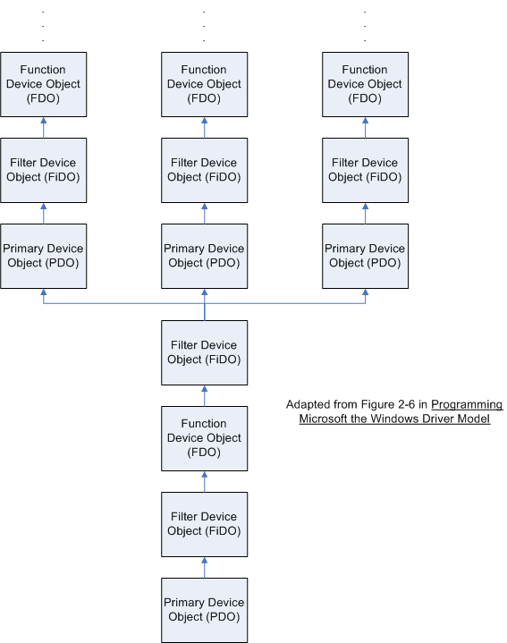

This section is introduces some of the data structures used in Windows drivers as well as how they are linked together to create a larger structure, which in turn provides a lot of functionality for device drivers. Your best resource in this section is the DDK (look up each object and struct) and the first three chapters of Oney's Programming the Windows Driver Model. It is critical during initial driver routines that these structures are allocated, linked together, and accessed properly to avoid crashing the system (null pointers, malformed linked lists, etc).
Similar to the device object structure, the I/O manager uses a DRIVER_OBJECT structure to represent each device driver. Again, like the device object structure, this structure is also partially opaque. Make sure you check the DDK reference for the structure before you write code that directly modifies any fields of any of these partially-opaque structures. The driver object is the place where function pointers to all your driver's routines are stored. The driver object contains a pointer to the first device object and also a pointer to the driver extension (the extension stores the pointer to the AddDevice routine for your driver). You'll see in the Device Object structure that a similar 'extension' exists for devices, and that is where any state information specific to a device can be stored.
The I/O Manager also maintains a linked list of devices, with the head of the list pointed to by DriverObject's DeviceObject field. You won't ever modify this list directly unless you are writing a legacy driver which must traverse the list and delete each device object when the driver is unloading. You will call the function IoAttachDeviceToDeviceStack to link
Windows XP's Plug and Play manager recursively enumerates device objects from a 'root' device object, down through specific buses, all the way up to functional device objects. When each device object is 'discovered,' some driver's AddDevice is called which fully creates each device object. Each of these device objects is known in the driver world by specific abbreviations, though this won't affect the kind of driver we are creating:
The above three 'types' of device objects are defined in the DDK through a partially-opaque structure (the kernel reserves the sole right to use some of the members of the structure) DEVICE_OBJECT. Devices are said to be 'stacked' because each device object contains a pointer (via the AttachedDevice member, opaque to drivers) to the device object immediately above it (there is no place, by default, to store a pointer to the device object below, but drivers can do this by creating their own storage spot). Once this upwardly-linked device stack is created by the PNP Manager, it is best that drivers do not alter it.
WDM provides functions such as IoGetAttachedDeviceReference to figure out what device object is on the top of the stack and IoAttachDeviceToStack in a driver's AddDevice routine to add the newly created DeviceObject to the old stack (see the MSDN page on that function for other utility functions). Device objects may store pointers to the driver object (below), the next device in the stack, the most recent I/O request packet sent to your device, a device extension, device-specific characteristics, and more.
The final thing stored inside a device object is the device extension (DEVICE_EXTENSION, PDEVICE_EXTENSION). This is a structure the driver writer creates that can store pointers and data on a per-device object basis. Any space you allocate in DriverEntry and then store a pointer to in your device extension must also be freed at some point (DriverUnload, perhaps?). The Device Extension is the prime place to store information such as pointers to above and below you in the stack, registry key values or locations, as well as runtime settings for your device.

Note that a device may play the role of both a functional device and a
primary device object where other devices are rooted.